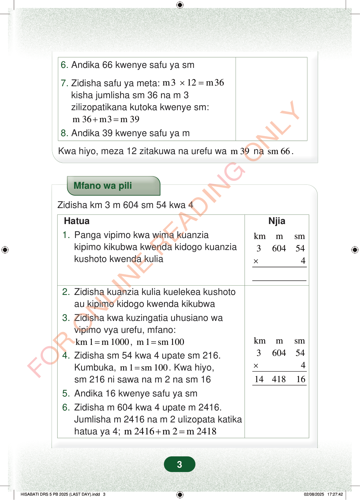

6.Andika 66 kwenye safu ya sm7.Zidisha safu ya meta:m312m36×=kisha jumlisha sm 36 na m 3zilizopatikana kutoka kwenye sm:m 36m3m 39+=8.Andika 39 kwenye safu ya mKwa hiyo, meza 12 zitakuwa na urefu wam 39nasm 66.Mfano wa piliZidisha km 3 m 604 sm 54 kwa 4NjiaHatua1.Panga vipimo kwa wima kuanziakipimo kikubwa kwenda kidogo kuanziakushoto kwenda kuliakmmsm3604544×2.Zidisha kuanzia kulia kuelekea kushotoau kipimo kidogo kwenda kikubwa3.Zidisha kwa kuzingatia uhusiano wavipimo vya urefu, mfano:kmmsm36045441441816×km 1m 1000=,m 1sm 100=4.Zidisha sm 54 kwa 4 upate sm 216.Kumbuka,m 1sm 100=. Kwa hiyo,sm 216 ni sawa na m 2 na sm 165.Andika 16 kwenye safu ya sm6.Zidisha m 604 kwa 4 upate m 2416.Jumlisha m 2416 na m 2 ulizopata katikahatua ya 4;m 2416m 2m 2418+=3
6. Andika 66 kwenye safu ya sm
7. Zidisha safu ya meta: m3 12 m36 × = kisha jumlisha sm 36 na m 3 zilizopatikana kutoka kwenye sm:
m 36 m3 m 39 + = 8. Andika 39 kwenye safu ya m
Kwa hiyo, meza 12 zitakuwa na urefu wa m 39 na sm 66 .
Mfano wa pili
Zidisha km 3 m 604 sm 54 kwa 4
Njia
Hatua 1. Panga vipimo kwa wima kuanzia kipimo kikubwa kwenda kidogo kuanzia kushoto kwenda kulia
km m sm 3 604 54 4 ×
2. Zidisha kuanzia kulia kuelekea kushoto au kipimo kidogo kwenda kikubwa 3. Zidisha kwa kuzingatia uhusiano wa vipimo vya urefu, mfano:
km m sm 3 604 54 4 14 418 16 ×
km 1 m 1000 = , m 1 sm 100 = 4. Zidisha sm 54 kwa 4 upate sm 216. Kumbuka, m 1 sm 100 = . Kwa hiyo, sm 216 ni sawa na m 2 na sm 16 5. Andika 16 kwenye safu ya sm 6. Zidisha m 604 kwa 4 upate m 2416. Jumlisha m 2416 na m 2 ulizopata katika hatua ya 4; m 2416 m 2 m 2418 + =
3
Hatua za mwisho za hesabu zinaonyesha kuwa meza 12 zina urefu wa m 39 na sm 66.6. Andika 66 kwenye safu ya sm7. Zidisha safu ya meta: m 3 × 12 = m 36 kisha jumlisha sm 36 na m 3 zilizopatikana kutoka kwenye sm: m 36 + m 3 = m 398. Andika 39 kwenye safu ya mKwa hiyo, meza 12 zitakuwa na urefu wa m 39 na sm 66.Mfano wa pili wa kuzidisha km 3 m 604 sm 54 kwa 4. Jibu linaonyeshwa kwa safu kuwa km 14, m 418 na sm 16.Mfano wa piliZidisha km 3 m 604 sm 54 kwa 4Hatua1. Panga vipimo kwa wima kuanzia kipimo kikubwa kwenda kidogo kuanzia kushoto kwenda kulia.Njiakm m sm3 604 54× 42. Zidisha kuanzia kulia kuelekea kushoto au kipimo kidogo kwenda kikubwa.3. Zidisha kwa kuzingatia uhusiano wa vipimo vya urefu, mfano:km 1 = m 1000, m 1 = sm 1004. Zidisha sm 54 kwa 4 upate sm 216.Kumbuka, m 1 = sm 100.Kwa hiyo, sm 216 ni sawa na m 2 na sm 16.5. Andika 16 kwenye safu ya sm6. Zidisha m 604 kwa 4 upate m 2416.Jumlisha m 2416 na m 2 ulizopata katika hatua ya 4; m 2416 + m 2 = m 2418km m sm3 604 54× 414 418 16